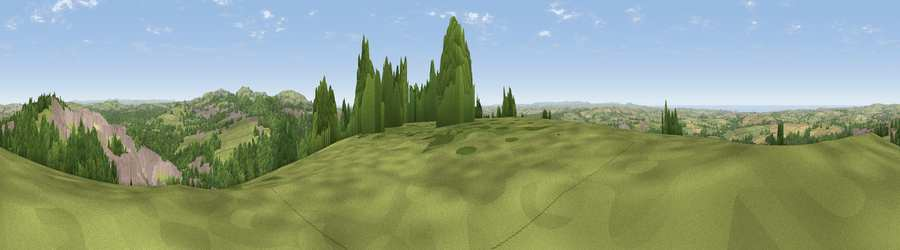

Penhale Hill
#897 in England · top 2% of its area beats it · near PenhaleThe view, rendered

A 360° render of this exact spot computed from the terrain model, tree cover and land cover — summer colours, afternoon light, calibrated against photographs of famous viewpoints. Real trees, hedges and buildings will differ in detail.
The panorama
Grey silhouette: terrain skyline in each direction (720 bearings, Earth curvature and refraction included). Dashed green: skyline with trees (+15 m) and buildings (+8 m) as obstacles. Blue strip: how far the ground is visible on each bearing.
Where the view opens
Wedge length = distance to the farthest visible ground on that bearing (vegetation-aware). Rings at 10, 25 and 50 km.
What fills the view
39% grassland · 30% woodland · 17% cropland · 13% built-up ·
Angular shares of the visible panorama (visual magnitude), not map area. Landscape diversity 0.59 (0–1 Shannon).
Key numbers
More beautiful places nearby
The staircase of upgrades: each row has a higher view potential than everything closer. Driving times are estimates from straight-line distance, calibrated against real road routing — check an actual route before setting out.
| Place | Direction | Drive | Score |
|---|---|---|---|
| Viewpoint near Penhale | S · 2 km | ~4 min | 81.7 |
| Viewpoint near Nanpean | E · 6 km | ~13 min | 84.2 |
| Viewpoint near Foxhole | ESE · 6 km | ~14 min | 86.4 |
| Viewpoint near Stenalees | E · 8 km | ~17 min | 88.0 |
| Viewpoint near Crackington Haven | NNE · 43 km | ~62 min | 88.1 |
| Viewpoint near Combe Martin | NE · 113 km | ~138 min | 88.9 |
| Holdstone Hill | NE · 114 km | ~139 min | 90.2 |
| The Knoll | ENE · 164 km | ~186 min | 91.0 |
50.37830, -4.93052 · source: dobih hill · position refined by local search. Computed location — check access rights before visiting.